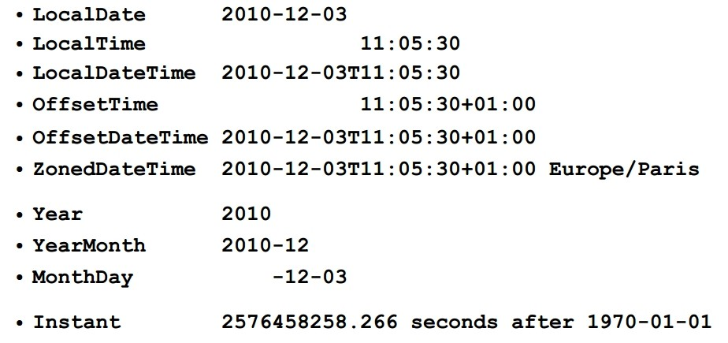
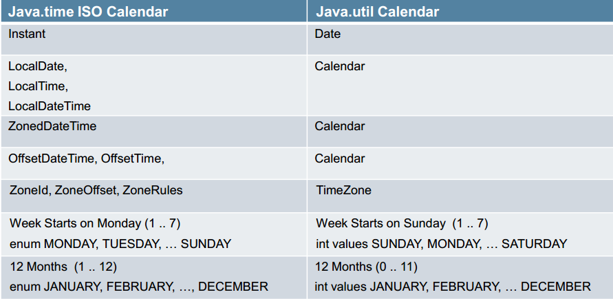

转自: https://my.oschina.net/benhaile/blog/193956
摘要: JSR310 已在 java8 中实现了, 对于恶心的 java.util.Date 和 Calendar, 终于可以休息了吧。。。
这次给大家讲下 java8 时间与日期 API。
众所周知, 日期是商业逻辑计算一个关键的部分, 任何企业应用程序都需要处理时间问题。应用程序需要知道当前的时间点和下一个时间点, 有时它们还必须计算这两个时间点之间的路径。但 java 之前的日期做法太令人恶心了, 我们先来吐槽一下
吐槽 java.util.Date 跟 Calendar
Tiago Fernandez 做过一次投票, 选举最烂的 JAVA API, 排第一的 EJB2.X, 第二的就是日期 API。
槽点一
最开始的时候, Date 既要承载日期信息, 又要做日期之间的转换, 还要做不同日期格式的显示, 职责较繁杂(不懂单一职责, 你妈妈知道吗？纯属恶搞~ 哈哈)
后来从 JDK 1.1 开始, 这三项职责分开了:
- 使用 Calendar 类实现日期和时间字段之间转换;
- 使用 DateFormat 类来格式化和分析日期字符串;
- 而 Date 只用来承载日期和时间信息。
原有 Date 中的相应方法已废弃。不过, 无论是 Date, 还是 Calendar, 都用着太不方便了, 这是 API 没有设计好的地方。
槽点二
坑爹的 year 和 month
|
|
观察输出结果, year 是 2012+1900, 而 month, 月份参数我不是给了 1 吗？怎么输出二月 (Feb) 了？
应该曾有人告诉你, 如果你要设置日期, 应该使用 java.util.Calendar, 像这样…
|
|
这样写又不对了, calendar 的 month 也是从 0 开始的, 表达 8 月份应该用 7 这个数字, 要么就干脆用枚举
|
|
注意上面的代码, Calendar 年份的传值不需要减去 1900(当然月份的定义和 Date 还是一样), 这种不一致真是让人抓狂！
有些人可能知道, Calendar 相关的 API 是 IBM 捐出去的, 所以才导致不一致。
槽点三
java.util.Date 与 java.util.Calendar 中的所有属性都是可变的
下面的代码, 计算两个日期之间的天数….
|
|
daysBetween 有点问题, 如果连续计算两个 Date 实例的话, 第二次会取得 0, 因为 Calendar 状态是可变的, 考虑到重复计算的场合, 最好复制一个新的 Calendar
|
|
JSR310
以上种种, 导致目前有些第三方的 java 日期库诞生, 比如广泛使用的 JODA-TIME, 还有 Date4j 等, 虽然第三方库已经足够强大, 好用, 但还是有兼容问题的, 比如标准的 JSF 日期转换器与 joda-time API 就不兼容, 你需要编写自己的转换器, 所以标准的 API 还是必须的, 于是就有了 JSR310。
JSR 310 实际上有两个日期概念。第一个是 Instant, 它大致对应于 java.util.Date 类, 因为它代表了一个确定的时间点, 即相对于标准 Java 纪元 (1970 年 1 月 1 日) 的偏移量; 但与 java.util.Date 类不同的是其精确到了纳秒级别。
第二个对应于人类自身的观念, 比如 LocalDate 和 LocalTime。他们代表了一般的时区概念, 要么是日期(不包含时间), 要么是时间(不包含日期), 类似于 java.sql 的表示方式。此外, 还有一个 MonthDay, 它可以存储某人的生日(不包含年份)。每个类都在内部存储正确的数据而不是像 java.util.Date 那样利用午夜 12 点来区分日期, 利用 1970-01-01 来表示时间。
目前 Java8 已经实现了 JSR310 的全部内容。新增了 java.time 包定义的类表示了日期 - 时间概念的规则, 包括 instants, durations, dates, times, time-zones and periods。这些都是基于 ISO 日历系统, 它又是遵循 Gregorian 规则的。最重要的一点是值不可变, 且线程安全, 通过下面一张图, 我们快速看下 java.time 包下的一些主要的类的值的格式, 方便理解。

方法概览
该包的 API 提供了大量相关的方法, 这些方法一般有一致的方法前缀:
- of: 静态工厂方法。
- parse: 静态工厂方法, 关注于解析。
- get: 获取某些东西的值。
- is: 检查某些东西的是否是 true。
- with: 不可变的 setter 等价物。
- plus: 加一些量到某个对象。
- minus: 从某个对象减去一些量。
- to: 转换到另一个类型。
- at: 把这个对象与另一个对象组合起来, 例如: date.atTime(time)。
与旧的 API 对应关系

简单使用 java.time 的 API
参考 http://jinnianshilongnian.iteye.com/blog/1994164, 被我揉在一起, 可读性很差, 相应的代码都有注释了, 我就不过多解释了。
|
|
|
|
与 Joda-Time 的区别
其实 JSR310 的规范领导者 Stephen Colebourne, 同时也是 Joda-Time 的创建者, JSR310 是在 Joda-Time 的基础上建立的, 参考了绝大部分的 API, 但并不是说 JSR310=JODA-Time, 下面几个比较明显的区别是
- 最明显的变化就是包名(从 org.joda.time 以及 java.time)
- JSR310 不接受 NULL 值, Joda-Time 视 NULL 值为 0
- JSR310 的计算机相关的时间 (Instant) 和与人类相关的时间 (DateTime) 之间的差别变得更明显
- JSR310 所有抛出的异常都是 DateTimeException 的子类。虽然 DateTimeException 是一个 RuntimeException
总结
对比旧的日期 API
| Java.time | java.util.Calendar 以及 Date |
|---|---|
| 流畅的 API | 不流畅的 API |
| 实例不可变 | 实例可变 |
| 线程安全 | 非线程安全 |
日期与时间处理 API, 在各种语言中, 可能都只是个不起眼的 API, 如果你没有较复杂的时间处理需求, 可能只是利用日期与时间处理 API 取得系统时间, 简单做些显示罢了, 然而如果认真看待日期与时间, 其复杂程度可能会远超过你的想象, 天文、地理、历史、政治、文化等因素, 都会影响到你对时间的处理。所以在处理时间上, 最好选用 JSR310(如果你用 java8 的话就实现 310 了), 或者 Joda-Time。
不止是 java 面临时间处理的尴尬, 其他语言同样也遇到过类似的问题, 比如
Arrow: Python 中更好的日期与时间处理库
Moment.js: JavaScript 中的日期库
Noda-Time: .NET 阵营的 Joda-Time 的复制